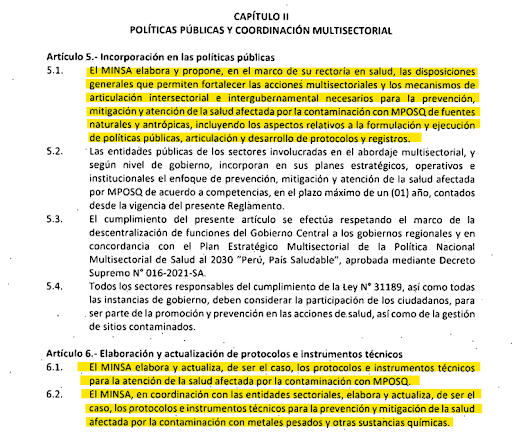
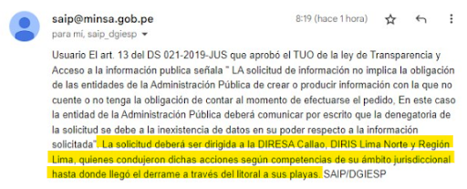
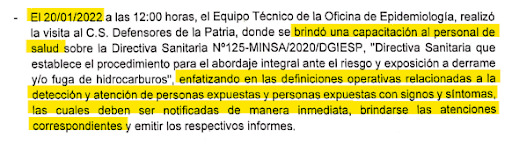
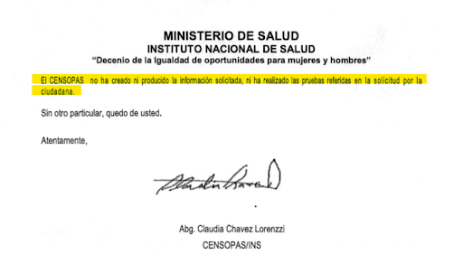

Capítulo 2:
La salud, una
consecuencia que nadie quiere atender
La vista borrosa y una parálisis de Bell en la parte izquierda del cuerpo —a raíz de la
incertidumbre de no saber cómo pagar un crédito bancario que solicitó para invertir en su
restaurante en la playa Las Conchitas, en Ancón— fueron las consecuencias que la salud de Norma
Rufino tuvo que enfrentar tras el nefasto derrame de petróleo de Repsol.
“La playa está contaminada, no podemos trabajar, toda la inversión se fue”, fue lo primero en lo que
pensó la comerciante cuando vio cómo una mancha de petróleo se asentaba en la orilla de su playa.
Narra esto con lágrimas en los ojos, intentando estabilizar la voz para continuar con la entrevista.
Ella es solo una de las tantas personas que registraron signos o síntomas por estar expuestas al
crudo: irritación de piel, ardor en ojos, dolores de cabeza recurrentes, mareos, náuseas y/o
somnolencia. Asimismo, la afectación a su salud mental también fue crítica.
El reporte de un estudio piloto realizado por la organización Unaliado reveló que el 67,7% de las y
los vecinos de la playa Las Conchitas presenta síntomas y signos propios de síndromes depresivos y
ansiosos. Pese a esta evidencia, según Norma, una chef que ha entregado su vida profesional a los
comensales playeros, el Ministerio de Salud (Minsa) ha brillado por su ausencia.
La paciencia del Minsa
El reglamento de la “Ley para fortalecer la prevención, mitigación y atención de la salud afectada
por la contaminación con metales pesados y otras sustancias químicas” (N.° 31189) detalla que es el
Minsa la entidad encargada de elaborar y proponer “las disposiciones generales que permiten
fortalecer las acciones multisectoriales y los mecanismos de articulación intersectorial e
intergubernamental necesarios para la prevención, mitigación y atención de la salud afectada por la
contaminación con metales pesados y otras sustancias químicas (MPOSQ)”.

En dicho documento también se precisa que esta entidad debe elaborar y actualizar “los protocolos e
instrumentos técnicos para la atención de la salud afectada por la contaminación con MPOSQ”. Este no
se implementó como es debido tras el ecocidio de Repsol.
A través de una solicitud de acceso a la información, este medio intentó conocer las acciones
realizadas por el Minsa, por ejemplo, el número de personas afectadas que identificaron y/o si se
les ha brindado seguimiento. La respuesta del sector que se encarga del área de salud fue que no
contaban con los datos requeridos, por lo que redireccionaron las consultas a la Dirección de Redes
Integradas de Salud (Diris) de Lima Norte y a la Dirección Regional de Salud (Diresa) de Lima y
Callao. Así empezó una travesía interinstitucional con pocas e imprecisas respuestas.

Diresa Callao respondió que su directora Nancy Zerpa no iba a brindar una entrevista y tampoco podía
hacer entrega de los informes de las campañas de salud dirigidas a las personas afectadas por el
derrame. Esto, pese a que se trata de documentos públicos. Ante ello, se realizó una solicitud de
transparencia por la vía formal y al cabo de unos días hicieron efectivo el envío de los reportes.
Dicho documento revela que el Minsa esperó cinco días desde que ocurrió la catástrofe ecológica para
capacitar al personal de salud sobre el abordaje ante el riesgo y exposición a derrame y/o fuga de
hidrocarburos.

Atención sin especialistas
Posteriormente, a través de la Diresa, se efectuaron siete campañas de salud: el 4, 5, 12, 19 y 26
de febrero; y el 3 y 12 de marzo. Estas, según el reporte entregado, fueron las únicas que se
llevaron a cabo desde el inicio del derrame. Ninguna de ellas llevó médicos especialistas en
oftalmología, dermatología y gastroenterología, ramas que, de acuerdo al toxicólogo Ricardo Puell,
son básicas y necesarias para identificar los posibles daños del petróleo en la salud física. Solo
la Diris Lima Norte llevó a un dermatólogo y un oftalmólogo en la campaña de salud que ejecutaron el
22 de febrero.
“Para cada órgano, hay pruebas específicas que se tienen que buscar para ver qué tanto daño tengo o
no tengo. ¿Les han hecho endoscopías para determinar si hay algún problema de fondo en el tema de
gastritis o cánceres gástricos? ¿Qué otras pruebas y test les han hecho? A veces hay cosas que
parecen sutiles y que son realmente efecto de las toxicidades”, aclara Puell.
El toxicólogo explicó, además, que no hay una prueba específica para identificar si hay o no
hidrocarburos en el cuerpo humano, por lo que todas las especialidades médicas deben estar
involucradas, ya que el impacto de estar expuestos al crudo puede darse en diferentes órganos del
cuerpo.
Otra revelación del reporte de la Diresa Callao es que no se consideró la atención psicológica como
parte del esquema de salud, pues solo se llevó a un especialista en esta área en dos oportunidades.
Asimismo, ante la solicitud del protocolo que aplicaron para atender a las personas posiblemente
afectadas por hidrocarburos y su monitoreo a mediano y largo plazo, respondieron que no hubo
protocolo alguno.

“Realmente el Ministerio [de Salud] lo que está haciendo es hacer campañas para decir que están
haciendo algo, pero en verdad no están haciendo nada”, advirtió Puell.
El especialista enfatizó en que el monitoreo de la salud de las personas expuestas al petróleo debe
darse cada seis meses en los primeros años, y luego anualmente por un periodo de 20 años, ya que los
efectos del petróleo en la salud se pueden dar en el momento, pero se evidencian también a lo largo
del tiempo, llegando a causar cáncer y algunas alteraciones de tipo psicológicas, como la pérdida de
memoria y la agresividad en las personas adultas. En los niños menores de 8 años, las consecuencias
podrían impactar impidiendo o complicando el desarrollo de actividades cognitivas. Asimismo, podrían
presentarse malformaciones en la siguiente generación.
Desde la organización ambiental CooperAcción informaron que han detectado diversas consecuencias a
la salud de las víctimas del derrame, sea de manera directa o indirecta. Muchas, por ejemplo,
tuvieron que prescindir de tratamientos a enfermedades crónicas o condiciones de salud debido al
impacto económico; otras se intoxicaron tratando de limpiar el petróleo del mar sin tener los
recursos necesarios; y el cambio en la dieta de las familias que se alimentaban con la fauna marina
de los lugares afectados.
Norma afirma que, por mucho que pidieron campañas de salud especializadas en oftalmología y
dermatología, un año después no han accedido a este tipo de atención por parte del Estado.
“Seguimos pidiendo una campaña de salud por el tema de exposición a hidrocarburo, campañas
periódicas, porque sabemos que nos puede aparecer una enfermedad en cualquier momento”, enfatizó. De
las seis solicitudes que hizo, solo una fue atendida tras dos meses de insistencia, pero bajo el
mismo esquema de siempre: medicina general y sin especialistas.
Para Norma esto significa solo una cosa, que ni ella ni sus vecinos son importantes para el Estado.
Se solicitó una entrevista al Minsa para que expliquen su accionar, pero no obtuvimos respuesta.
Quizá la chef de la playa Las Conchitas tenga razón.
Capítulo 1:
Repsol pagó
estudios que afirman que ecosistemas están libres de petróleo, pero realidad los
contradice